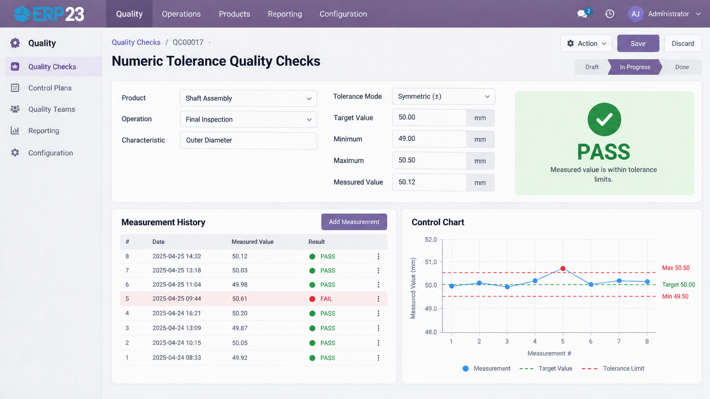

A quality check type supporting min/max numeric tolerance with automatic pass/fail — built for machining and metal fabrication.
Requires Odoo Enterprise: this module depends on the Quality app (quality), which ships only with Odoo Enterprise and is not part of Odoo Community.
Machining and metal fabrication shops live and die by numeric tolerances, but Odoo's core Quality app leaves pass/fail on a measurement to the operator's own judgment. Custom Numeric-Tolerance Quality Checks adds a new "Tolerance Check" quality point type where you define a target value and an acceptable min/max band — either as a symmetric plus/minus deviation (absolute or percentage) or as a direct range — and the check that gets generated from it decides pass or fail automatically the moment a measurement is entered. Every check keeps its own frozen snapshot of the tolerance it was checked against, so changing a point's configuration later never rewrites history. Out-of-tolerance measurements raise a standard Quality Alert automatically, and every point builds up a measurement history and a native control-chart view for statistical-process-control style review. It's built for quality engineers and shop-floor operators in discrete manufacturing, and it's fully additive to core Quality — no existing behavior is overridden.
Define a target value plus a symmetric (±) or min/max range tolerance, right on the quality point.
The operator enters a measured value and the check state is decided instantly — no manual judgment call.
A failed measurement raises a standard Quality Alert pre-filled with measured vs. target/min/max.
Every past measurement on a point, plus a native line-graph control chart for SPC-style review.
Measure the same dimension at several points on a part using several quality points — no new model needed.
No parallel data model and no overridden core behavior — purely additive to the Quality app it depends on.
Each check stores its own snapshot of the target, minimum, maximum and unit at the moment it was created, instead of reading them live from the quality point. Retune a point's tolerance next quarter and every check made under the old tolerance still shows exactly what it was judged against — audit history that can't be rewritten after the fact.
The control chart is a native Odoo line-graph view over quality.check, filtered to the current point — not a bundled charting library or custom widget to keep patched. Open it straight from the check form to see every past measurement on that point plotted over time.
ERP23
Developed and maintained by ERP23.
Website: https://www.erp-23.com/
Email: erp23@brainstation-23.com